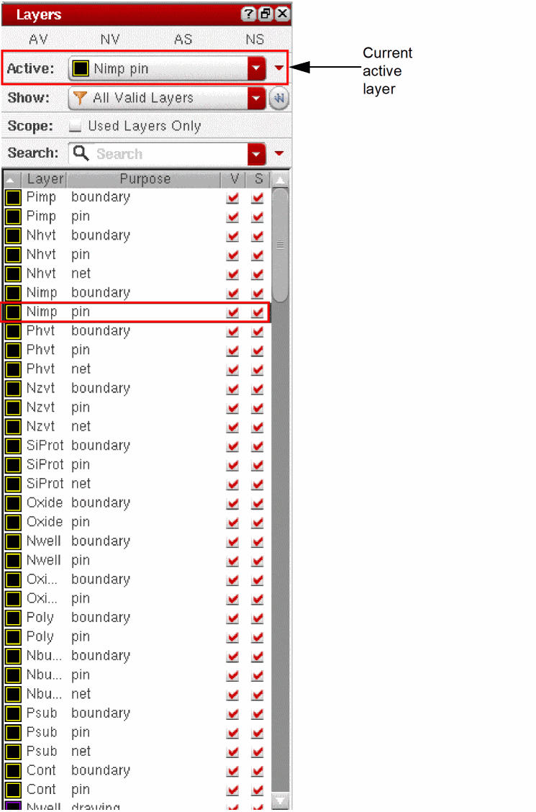
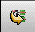
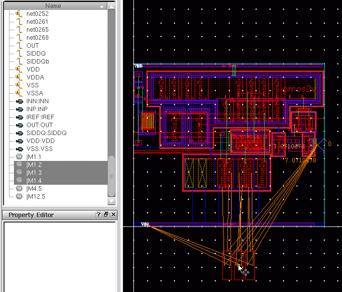

F
Layout XL Assistants
This section describes the dockable assistants available in the Virtuoso® Layout Suite XL layout editor (Layout XL).
Displaying a Dockable Assistant
To display an assistant, do one of the following.
- From the layout window menu bar, choose Windows – Assistants – <Assistant Name>.
- Click the right mouse button on any toolbar/status bar/menu bar and choose the assistant you want to dock.
The assistant you chose opens and is docked in its default position in the session window.
Hiding a Dockable Assistant
To hide an assistant, do one of the following.
- Click the Hide button (X) in the assistant title bar.
- From the layout window menu bar, choose Windows – Assistants – <Assistant Name>.
-
Click the right mouse button on any toolbar/status bar/menu bar and choose the assistant you want to hide.You can also use the F11 key to hide a dockable assistant. Pressing F11 toggles all the active assistants On and Off, giving quick access to the assistants and making it possible to create more canvas space with a single click. However, it is important to note that the shortcut key works only with the “active” assistants.
Related Topics
Annotation Browser
Use the Annotation Browser to view and manage the violation markers generated for the current design by different Virtuoso applications.
The Annotation Browser displays the violation markers due to the current environment of the design window. If you modify the environment by editing a cellview in place or descending into a hierarchical cellview, the Annotation Browser gets updated accordingly to reflect a different set of violation markers.
In addition to the generic methods for showing or hiding an assistant, as described in Layout XL Assistants, you can use the Layout XL Toolbar button, , to show and hide the Annotation Browser.
Annotation Browser Graphical User Interface
Annotation Browser Context Menus
Grouping Markers in the Annotation Browser
Sorting Markers in the Annotation Browser
Filtering Markers in the Annotation Browser
Related Topics
Annotation Browser Graphical User Interface
The Annotation Browser graphical user interface consists of the following elements.
Toolbar
The toolbar provides functions to filter and manage the violation markers displayed in the browser pane, and to define how the markers are displayed in the design window.
| Icon | Name | Description |
|---|---|---|
|
Zooms and pans to the currently selected markers when using the Up and Down arrows in the toolbar, or to the merged bounding box of all the selected nodes when a selection is changed in the browser. For example, if you select a node in the tree; the tool zooms to the merged bounding box of all the markers under that node. So, in the example below SRC
If you select Environment variable: autoZoomEnabled The Annotation Scale slider defines a ratio specifying how much of the available canvas area is occupied by the merged bounding box of the selected markers after the zoom is performed. See autoZoomIsFixed. For example, if you set it to 4, the ratio is 1/4; if you set it to 10, the ratio is 1/10, and so on. In Fixed mode, the ratio is applied to the bounding box of all the selected markers. So, if set to 4, the merged bounding box of all the selected markers occupies 1/4 of the canvas area after the Auto Zoom is performed. In Minimal mode, the Annotation Scale defines a minimum zoom level that will ensure all the selected nodes are visible in the canvas. For example, assume the Annotation Scale is set to 4.
|
||
|
Zooms to the selected set of markers in the design window. For markers in the hierarchy, the Zoom To Selected functionality highlights the markers of the first instance that satisfies the specified Annotation Browser depth and the display start- and stop-level criteria.
If a marker is present in the Annotation Browser tree but cannot be visualized because no instance containing those markers can be highlighted on canvas, then a "not allowed" icon ( |
||
|
The behavior (and label) of this button changes depending on what is selected in the browser.
|
||
|
The behavior (and label) of this button changes depending on what is selected in the browser.
|
||
|
Specifies that markers that are highlighted in the canvas can be selected even if marker selection has been switched off in the Palette assistant. Environment variable: highlightedIsSelectable |
||
|
Selects a marker in the Annotation Browser, if the corresponding marker object in the layout canvas is clicked.
Even when the marker object is clicked in the layout canvas, the selection in the canvas does not change. See the abHiFindMarker SKILL function documentation for more information.
For markers that do not display in the Annotation Browser due to the applied filtering, nothing is selected in the Annotation Browser. |
||
|
Shows markers that are marked as Checked in the Annotation Browser. |
||
|
Hides markers that are marked as Checked in the Annotation Browser. Note:
|
||
|
Deletes the selected markers from the Annotation Browser and design window. |
||
|
Deletes the markers from the currently selected tab in the Annotation Browser that are not impacted by any of the filter settings currently applied. |
||
|
Deletes all the markers from the currently selected tab in the Annotation Browser. |
||
|
Specifies the scope of the violations displayed. Choose from
All markers that do not belong to the current cellview are dimmed. For example, when you descend into a hierarchical cellview, the markers not at the current level are dimmed. You can still delete or mark these as checked, but you cannot highlight them in the canvas. When you return to the higher level, the browser restores the highlighting that was set for that level prior to the descend. Note:
a.) With the scope set to “current cellview to depth” or “top to depth”, if a marker reported in the Annotation Browser does not belong to the visible hierarchy—window cellview to edit cellview hierarchy—the marker displays an invalid icon ( b.) If the edit cellview in the window is the top cellview and the scope in the Annotation Browser is set to “Top cellview only”, the update commands corresponding to the markers displayed in the CAS tab, such as Bind, Generate, and Update Pin Direction, are available in the context menu. You can choose an appropriate command to interactively fix the marker. |
||
|
Filters the results in the browser pane based on a user-specified string. When you type a string in the field, the browser updates automatically to show only those markers that feature the specified string in all the displayed columns and in the Description column, even if the Description column is not displayed.
You can use the alwaysUseDescriptionForFiltering environment variable to control whether the Description column is always searched or not.
The browser pane displays the markers based on the Search string. For example, if you type in an instance or net name, the Annotation Browser searches the displayed columns (and the Description column, if alwaysUseDescriptionForFiltering is set to Previous filters used in the current session are accessible from the drop-down list to the right of the entry field. There is also a further drop-down menu which you can use to specify the criteria to be used for the search. |

Tabs
The Annotation Browser assistant includes the following tabs that carry violation markers of different types:
For information about the type of markers displayed by each of these tabs, see Annotation Browser Tabs.
Browser Pane
The Browser Pane displays the markers corresponding to each application category supported by a tab. For example, in the Constraints tab, the browser pane displays markers for all the supported categories: Specialty Routing, Placement, and Design and Process Rules.
When you select a marker in the browser pane, it is automatically highlighted in the canvas and vice versa. The current marker is colored magenta in the browser and is haloed in the canvas. If you selected a marker in the canvas and that marker is listed in a tab that is currently hidden, that tab is automatically brought to the front and the tree is scrolled to show the selected marker. Where there are multiple selected markers on different tabs, the focus is given to the current (magenta) marker of the selected set.
The columns in the table show the following information for each marker.

Description Pane
The Description pane displays the message stored on the current marker. The current marker is colored magenta in the browser and haloed in the canvas. If there are multiple markers selected, the current marker and its description changes as you use the Go To The Next Selected Marker and Go To The Previous Selected Marker buttons to browse the selected set. (This works even if you select the markers in the canvas and their parent category is not expandable in the browser pane.)
Depending on the selection in the Annotation Browser, the Description pane shows:
- Nothing, if multiple category nodes are selected.
- The marker node description, if a selected category node has one marker child.
- Description of the first marker, if a selected category node has multiple marker children and the first and the last marker nodes (in sorted order) have the same description.
Related Topics
Annotation Browser Context Menus
Grouping Markers in the Annotation Browser
Sorting Markers in the Annotation Browser
Filtering Markers in the Annotation Browser
Annotation Browser Tabs
The Annotation Browser contains the following tabs, each of which, displays a unique set of markers. The Connectivity tab, for example, displays markers that indicate connectivity violations in the design.
The markers supported by each tab are displayed in the Browser Pane. Each tab name in the Annotation Browser includes a value within parentheses. This value indicates the number of markers currently shown in the browser pane as opposed to the total number of markers in the tab.
For example, Connectivity (23/120) means that the design contains 120 markers generated by the connectivity extractor, of which only 23 are being displayed in the browser pane.
Depending on your preferences, you can change the position of the tabs in the Annotation Browser. Although, by default, the tabs are displayed horizontally at the top of the Annotation Browser assistant, you can also choose to display the tabs vertically on the side. To control the position of the tabs, use the tabPosition environment variable.
In addition to choosing the position of the tabs, you can choose the order in which the tabs are displayed by manually dragging and dropping them to form the desired order. After you have decided upon the tab display order, you can save your settings so that the tabs display in the same order the next time you open the browser.
For example, the figure below shows the Connectivity tab being dragged to the right so that it is the second tab to be displayed the next time the Annotation Browser assistant is opened.
Notice in the figure below that the Connectivity tab is now the second tab to be displayed. DRC/DFM is the first.

Saving the Settings
To make sure the order that you choose for the Annotation Browser tabs is retained even after you close the current Layout XL session, you must save your tab order preferences to a *.ini file. To do this:
-
In the browser pane, right-click and select Settings – Save from the shortcut menu, as shown in the figure below.
Your current tab order settings will get saved to a .ini file. You can then load the .ini file using the Settings – Load command to restore the saved settings the next time you launch Annotation Browser.
ab.ini file, which gets loaded automatically when you launch the Annotation Browser. The ab.ini file is, by default, saved under the .cadence/dfII/ab directory, unless referenced at some other location as defined in the setup.loc file.Connectivity tab
The Connectivity tab carries the connectivity extractor markers that indicate connectivity violations in the design. The markers supported by this tab are:
- Opens
- Shorts
- Weak Connect Violations
- Must Connect Violations
- Illegal Overlaps
- Invalid Overlaps
- Unnecessary Pseudo-Parallel Violations
- The Open markers created by the connectivity extractor between unassigned must-join instance terminals are displayed using a name that reflects the internal net name and the instance name concatenated with "|".
- You can choose to display the listed violations in the tab based on signal type or the net for which these violations are reported.
Showing and Hiding Current Incomplete Nets
Showing and Hiding Selected Incomplete Nets
Searching for Specific Incomplete Nets
Automatically Showing Newly-Created Incomplete Nets
Checking Shorts, Incomplete Nets, and Illegal Overlaps
DRC/DFM tab
The DRC/DFM tab carries violation markers generated during the drdEdit) markers.
Hint Support for DRC/DFM Tab
In addition to displaying the markers, the DRC/DFM tab displays a hint for some markers. The hint gives information about fixing the error reported by the marker. Depending on the error that a marker flags, several hints may be associated with the marker.
For example, if a design has an error that can be fixed in two ways, the Annotation Browser not only displays a marker to flag the error but also two hint categories, as shown in the figure below.
Each hint category is composed of one or several hint items, as displayed in the figure below, that provide information about the shapes that need to be moved to fix the error.

For the previous example, as displayed in the figure above, the first error flagged by the marker can be fixed by following either of the hint items:
- The first hint item requires only one shape to be moved to the east
- The second hint item requires two shapes to be moved to the west
To view the hint text, you can select either the hint item, the hint category, or the marker, as appropriate. The hint details are displayed in the Description box, as shown in the figure below. However, if you select multiple hint items or hint categories belonging to different markers, no information is displayed in the Description box.

If you choose to highlight the hints for the selected marker, the description for these highlighted hints appears in blue, as shown above.
For a highlighted hint item, a thick line on the hint edge, as shown below, represents the edge that needs to be moved to fix the error. The thin line, on the other hand, represents the destination location for the edge.

To learn more about the generic highlighting options in Annotation Browser, see
CAS t ab
The CAS tab is automatically displayed to report the markers generated by the Connectivity – Check – Against Source (CAS) command. The markers in the CAS tab report the differences between the schematic and the layout in terms of instances, masters, connectivity, parameters, and instance or net names, depending on the checks that are selected on the Check Against Source form.
The figure below displays the Annotation Browser CAS tab reporting various types of markers. Where applicable, the CAS tab also displays the Current and Expected values against each marker. The Description field at the bottom of the CAS tab, similar to the other tabs, provides more information about the selected marker and hints at how the marker can be resolved.
The marker of each type is identified using a unique icon, as displayed in the figure below.
Having the CAS markers display in the Annotation Browser assistant makes the CAS makers available in the format that is already being used to view the other marker types in the design, such as those generated by the connectivity extractor. This also makes it simple to visualize, select, sort, filter, and group the schematic and layout differences.
Using Canvas Glyphs for CAS Tab Markers
In addition to generating unique icons in Annotation Browser to make it easy for the CAS tab markers to be spotted, Layout XL creates unique canvas glyphs to highlight the associated instance on the layout canvas. Click each generated glyph or hover the mouse pointer over the glyph to see the associated information balloon, detailing the kind of mismatch and the current and expected values for the layout object.
Depending on the type of marker generated for the instance, the canvas glyph representation on the canvas varies. Here are a few examples:
Example 1: Connectivity mismatch glyph
This glyph indicates connectivity mismatch on top-level pins and global nets, mismatched or missing terminals and instance terminals, and unbound nets in the layout. For more information about the mismatch, see the Check Against Source form.

Example 2: Parameter mismatch glyph
This glyph indicates issues with CDF parameters (and properties) set on the schematic and the layout views. For more information about the mismatch, see the Check Against Source form.

Example 3: Binding mismatch glyph
This glyph indicates layout instances that are not bound to the schematic instances, and the schematic instances that are not yet generated in the layout. For more information about the mismatch, see the Check Against Source form.

To help analyze the markers on the canvas and to help editing the layout, Layout XL enables you to pin the information balloons associated with the markers. This allows for the information related to specific markers to be available on the canvas while you explore the markers for other related objects.
To pin a CAS glyph information balloon:
-
Click the required CAS glyph generated on the layout canvas.
The related information balloon appears, displaying a Pin icon ( )on the top right corner. -
Click the Pin icon to replace it with the Delete icon (
 ).
).
The information balloon is now ready to be moved around on the layout canvas and placed appropriately. -
Drag the information balloon and drop it at an appropriate location on the layout canvas.
Analyze the generated markers and resolve them using appropriate commands from the shortcut menu. When the markers are resolved and the balloon information is no longer needed on the layout canvas, delete the pinned information balloon. For more information on fixing the CAS tab markers, see Fixing CAS Tab Markers. -
Click the Delete icon (
 ) on the information balloon to delete the pinned balloon.
) on the information balloon to delete the pinned balloon.
Fixing CAS Tab Markers
To interactively fix the CAS tab markers:
-
Right-click a marker in the Annotation Browser or the layout canvas and choose the appropriate command that is available in the context-sensitive menu for the marker.
For example, if a marker represents an instance as Unbound, you can choose from the following commands in the context-sensitive menu to resolve the marker: Depending on the command you choose from the context-sensitive menu for the marker, the marker will either be resolved, or you will be guided to the next appropriate form, command, or action.
The table below lists the various marker categories under which the schematic versus layout differences are reported in the CAS tab. The table also displays the icon that identifies each marker category, and the commands available in the context-sensitive menu to resolve each marker category.
| Marker Category | Icon | To resolve, choose... |
|
Update Selected Layout Parameters Update Selected Schematic Parameters Update All Schematic Parameters
When the allowSelectedParamUpdate environment variable is set to
nil, the following commands are not displayed in the context-sensitive menu of the reported instance: |
||
Constraints tab
The Constraints tab carries the markers generated by various Virtuoso tools that verify the design for Placement, Speciality Routing, and Design and Process Rules. The supported tools conducting these checks are:
Depending on the tool with which the marker is associated, the markers on the Constraints tab are organized into the following categories:
|
|
|
|---|---|
Misc tab
The Misc tab carries all those markers that are not associated with any of the applications supported by the remaining tabs. This tab also carries violation markers for any process rule violations in the design. Any room violations generated during placement are also displayed in this tab.
IDF tab
The IDF tab carries violation markers generated using the DRC/DFM fixing flow.
Routing tab
The Routing tab carries violation markers generated during design verification.
For more information, see
Related Topics
Annotation Browser Context Menus
Annotation Browser Graphical User Interface
Grouping Markers in the Annotation Browser
Sorting Markers in the Annotation Browser
Filtering Markers in the Annotation Browser
Annotation Browser Context Menus
The Annotation Browser has three context menus.
-
Show or hide tabs selectively.
Alternatively, you can use the autoHideEmptyTabs environment variable to specify whether to show or hide the empty tabs. - Hide all tabs
-
Automatically hide any tabs that are empty
Alternatively, you can use the autoHideEmptyTabs environment variable to specify whether to show or hide the empty tabs.
Right-click a table header to:
- Show or hide different columns in the table.
- View the markers in the current tab grouped by the selected column.
- Sort the markers in the current tab grouped by the selected column.
Right-click the table body to access the following functions. (These are enabled and disabled dynamically depending on what is selected in the browser window.)
| Command Name | Description |
|
Opens the cellview containing the selected marker with the behavior specified in the command name. For example, Open (edit/new tab) opens the cellview in edit mode in a new tab; Open (read/current tab) opens the cellview in read mode in the current tab. You specify the default behavior for this command in the Annotation Browser Options form. To open a different view of the current cell, use the Open command instead. |
|
|
Expands the hierarchy to display everything below the currently selected node. |
|
|
Collapses the hierarchy to hide everything below the currently selected node. |
|
|
Expands the hierarchy and selects all the marker entries below the currently selected node. |
|
|
Zooms to the selected set of markers in the design window. For markers in the hierarchy, the Zoom To Selected functionality highlights the markers of the first instance that satisfies the specified Annotation Browser depth and the display start- and stop-level criteria.
If a marker is present in the Annotation Browser tree but cannot be visualized because no instance containing those markers can be highlighted on canvas, then a "not allowed" icon ( |
|
|
Sets the Checked state for the selected markers. When a marker is set to Checked, you can use the Hide Checked Markers button to hide it in the Annotation Browser.
See |
|
|
Sets the highlight state of the selected markers in the design window. Using this command on a node sets the visibility for all the markers under that node.
A grayed-out version of the eye icon displayed against a node indicates that only some of the markers under that node are highlighted.
See |
|
|
Suppresses (or unsuppresses) the expansion of the node under the cursor. Suppress expansion globally by setting a limit on the number of violations using the Suppress expansion option in the Annotation Browser Options form. You then use these commands to dynamically unsuppress (and suppress) the expansion for a selected node in the browser. |
|
|
Sets the color used to draw the corresponding marker in the canvas. Using this command for a node sets the color for all the markers under that node. Choose cycle to let Layout XL select the color automatically by cycling through a predefined list.
This command does not change the color assigned to the marker in the database, only the color used to draw the marker in the canvas.
See |
|
|
Deletes the selected marker or marker category from the Annotation Browser and the design window. |
|
|
Selects the nets associated with the currently highlighted markers in the layout canvas and Navigator assistant. |
|
|
Traces the physical and logical connectivity of the selected nets. For more information, see Tracing Nets. |
|
|
Opens the Incomplete Net Filter form where you filter the incomplete net markers in the browser based on the set of currently selected nets in the layout canvas or Navigator assistant. For more information, see Setting an Incomplete Net Filter. |
|
|
Opens the Short Locator form that can be used to locate the short that is causing an error.
For more information, see |
|
|
Extracts all the nets associated with the selected markers. If the selected marker does not have a net associated, the Extract Nets menu item is disabled. |
|
|
Extracts connectivity from the areas that were not interactively verified by the connectivity extractor. |
|
|
Opens the View By form where you specify how the list of annotations is grouped and sorted in the browser. For more information, see Grouping Markers in the Annotation Browser. |
|
|
Opens the Annotation Browser Options form, where you specify: |
|
|
Loads or saves the following user-defined settings for the selected tab; |
You can delete and set the checked state of markers only in the cellviews that are open in edit mode. If you try to use the Delete or Check/Uncheck commands (or their Browser Pane equivalents) on a read-only cellview, the application prompts you to confirm if you want to re-open the cellview in edit mode before performing the requested operation.
nil.Related Topics
Annotation Browser Graphical User Interface
Grouping Markers in the Annotation Browser
Sorting Markers in the Annotation Browser
Filtering Markers in the Annotation Browser
Annotation Browser Forms
Use the following forms to customize the way marker information is displayed in the Annotation Browser.
Related Topics
Annotation Browser Graphical User Interface
Annotation Browser Context Menus
Grouping Markers in the Annotation Browser
Sorting Markers in the Annotation Browser
Filtering Markers in the Annotation Browser
Annotation Browser Options
Use the Annotation Browser Options form to specify the look and behavior of the Annotation Browser. To open the form, right-click in the browser pane and choose Options.
Suppress expansion at specifies in 1000s the number of violations that prevents a node from being expanded. If the number of entries under a particular node exceeds the limit, the node is not expanded by default.
Environment variable: suppressExpansion
Hierarchy depth specifies the number of levels of hierarchy searched for markers. The default is 3.
Environment variable: hierarchyDepth
Default Open specifies the default open behavior when you descend into a cellview.
Mode specifies whether the cellview is opened for edit or read.
Environment variable: openMode
Open in specifies whether the cellview is opened in a new tab, the current tab, or a new window.
Environment variable: openLocation
Remove highlighting when browser is closed removes the highlighting in the design canvas when you close the Annotation Browser assistant. The default is off, which means the markers remain highlighted in the canvas when you close the browser.
Environment variable: hideMarkersWhenBrowserHidden
Automatic highlighting controls the highlight state of newly created markers in the design canvas. For example, when you delete a part of a completed route in the canvas, an open marker is created automatically. This option controls whether the dragline representing that marker is automatically displayed or not.
Highlight new marker categories specifies that draglines are displayed automatically in the canvas to represent newly created marker categories.
Highlight new markers specifies that draglines are displayed automatically in the canvas to represent newly created individual markers.
Inherit from parent category specifies that a newly created marker inherits the highlight state from its parent category. If the category is only partially highlighted, the dragline representing the new marker is not automatically highlighted.
Environment variable: automaticHighlight
Related Topics
View By
Use the View By form to specify how the annotations are organized in categories and how the categories are sorted in the browser pane.
To open the form, right-click in the browser pane and choose View By.
From the View items by list box, choose a category by which to view items. Then, click Ascending to sort the items by the lowest number or in alphabetical order, or click Descending to sort the items by the highest number or reverse alphabetical order.
If required, do the same for second, third, and fourth-level groupings using the Then by pull-down lists in the form.
Click Apply to apply your changes to the markers currently displayed in the Annotation Browser. Click OK to apply the changes and to close the View By form. Click Defaults to restore the default grouping for the tab (for example, the default grouping for the Connectivity tab is Type/Net).
For more information, see Grouping Markers in the Annotation Browser.
Related Topics
Incomplete Net Filter
Use the Incomplete Net Filter form to control the display of incomplete net markers for the specified nets.
To open the form, right-click in the browser pane and choose Incomplete Net Filter.
Filter incomplete nets specifies whether the incomplete net filter needs to be set, based on the values of the incompleteNetFilterDefaultList and incompleteNetFilterMode environment variables, unless the required filter settings are already saved in the design.
Environment variable: incompleteNetFilter
Filter Mode enables you to choose whether to show (or hide) the incomplete net markers for the specified net (or nets).
Net Names lets you specify a net (or nets) on which the selected Filter Mode must apply.
- If the selected Filter Mode is set to Show, only the specified net names have their labels showing or displaying in the layout canvas.
- If the selected Filter Mode is set to Hide, only the specified net names have their labels hidden in the layout canvas.
Populate the List of Nets using the buttons on the right of the form.
Add To List adds the specified nets to a list on which the selected filter mode applies.
Remove From List removes a selected net (or nets) from the existing filter list.
Remove All removes the entire filter list.
Add Selected Nets lets you add nets to the filter list by selecting the nets in the Navigator assistant or from the layout canvas. This option can be used when a large number of nets need to be added to the filter list. Typing the names to add to the list can be time consuming when the number of nets to be added are too many.
Save To Cellview saves the current filtering options to the cellview such that the same settings can be reloaded later when the cellview is relaunched.
Environment variable: incompleteNetFilter
The Save To Cellview option is enabled only when the current cellview is editable.
Reload From Cellview enables you to revert to the filtering options previously saved for the cellview even when the cellview is opened in a different window.
The Reload From Cellview option is enabled only when some information was previously saved into the cellview.
Delete From Cellview enables you to delete the net name filter settings already saved for the cellview.
Defaults reverts the saved settings and sets the incomplete net filter based on the default settings that are driven by the environment variables.
Click Apply to apply your changes to the markers currently displayed in the Annotation Browser; or OK to apply the changes and to close the Incomplete Net Filter form.
Related Topics
Custom Show Filter
Use the Custom Show Filter form to define more complex filtering criteria, which reduce the number of annotations displayed in the Annotation Browser. To open the form, right-click the header of the column for which you want to define the custom filter. Then, choose Show – Custom from the context menu.
The Custom Filter option is not supported by the following columns: Tree, Set Highlight State, Set Highlight Color, and Set Marker Check State.
Add criteria adds further filtering criteria to the list. Choose whether you want filtering to Match all of the following or Match any of the following criteria.
-
Choose the operator from the first pull-down list.
Operator Meaning - Choose the column content by which you want to filter from the second pull-down list. The content of this list is determined automatically by the system.
- If required, click Delete Criteria ( ) to remove the corresponding criterion from the list.
Click Apply to apply your changes to the markers currently displayed in the Annotation Browser; or OK to apply the changes and close the Custom Show Filter form.
For more information, see Defining and Applying a Custom Filter under Filtering Markers in the Annotation Browser.
Related Topics
Grouping Markers in the Annotation Browser
To change the way the markers displayed in the Annotation Browser are grouped:
-
In the browser pane, right-click anywhere and choose
The View By form is displayed showing the current groupings. In this example, we will change these to group first by Type, then by Layers, and finally by Nets, with each group sorted in Ascending order.
-
Click OK to apply the changes and to close the form.
Where the layer information is available, the markers in the browser pane are grouped by layers.

Restoring Default Groupings in the Annotation Browser
To restore the default grouping defined for the tab:
-
Click Defaults in the View By form.
Annotation Browser Display with No Grouping Rules
If you specify no grouping, the Annotation Browser tree view is flattened, the tree column is removed, and the previous Top grouping column is restored and used to define how the markers are sorted.

Related Topics
Annotation Browser Graphical User Interface
Annotation Browser Context Menus
Sorting Markers in the Annotation Browser
Filtering Markers in the Annotation Browser
Sorting Markers in the Annotation Browser
To sort the markers in the browser pane by a different column than the one currently set:
- Right-click the header of the column for which you want to sort the markers.
-
Choose Sort By from the context menu and then select the column by which to sort the markers. For this example, let us sort by Cell Name.
The table entries are re-sorted based on your selection.

- To sort the entries by a different column, repeat steps 1 and 2 for the column in question.
Ctrl key pressed, click the corresponding column header. Sorting markers based on highlight color is not supported.Related Topics
Annotation Browser Graphical User Interface
Annotation Browser Context Menus
Grouping Markers in the Annotation Browser
Filtering Markers in the Annotation Browser
Filtering Markers in the Annotation Browser
You can filter the markers shown in the Annotation Browser display using either a predefined column filter, or by defining your own filter using the Custom Show Filter form. Additionally, you can use the Incomplete Net Filter filter form to filter incomplete net markers based on the set of currently selected nets in the layout canvas or Navigator assistant. For more information, see
- Setting a Predefined Column Filter
- Defining and Applying a Custom Filter
- Setting an Incomplete Net Filter
Setting a Predefined Column Filter
You can set a predefined filter for a column to selectively show the markers in that column. For example, you can set a predefined filter on the Type column to only show the markers of a particular type, such as Incomplete Nets or Shorts.
To set a predefined filter for a Column:
- Right-click the header of the column to which you want to apply the filter.
-
In the context menu, choose Show from the list of simple filters and click an appropriate filter from the predefined filter list.

-
Click OK to proceed.
The browser updates to show only the markers corresponding to incomplete nets.
The column header displays in bold blue text to indicate that a filter is set on the column.

If required, you can apply a predefined or custom filter on another column. The browser shows only those markers that match all the filter criteria for all the columns.
To remove the applied filter and to display all the markers, choose Show – All.
Defining and Applying a Custom Filter
To define and apply a custom filter:
- Right-click the header of the column to which you want to apply the filter.
-
In the context menu, choose Show – Custom to define a custom filter for the column.
The Custom Show Filter form displays. - Click Add criteria to add a criterion for filtering the markers, such as vdd.
-
For each criterion, choose the operator from the first pull-down list and select the column content to filter by from the second pull-down list.
For example, the custom filter shown below displays all the shorts on net vdd.

-
Click OK to apply the changes and close the Custom Show Filter form.
The column header is drawn in bold blue text, as shown in the figure above, to indicate that a filter is set on the column.
In addition, the tab in which you applied the custom filter also has its header text turned blue.
If required, you can apply a predefined or custom filter on another column. The browser shows only those markers that match all the filter criteria for all the columns.
To remove the applied filter(s) and to display all the markers, choose Show – All.
Setting an Incomplete Net Filter
You can set an incomplete net filter for the selected nets in a window. This ensures that the Annotation Browser assistant displays (or hides) the incomplete net markers only for the specified list of nets in a given window.
To set an incomplete net filter:
-
Use the abSetIncompleteNetFilter SKILL function.
The SKILL function enables you to specify a list of net names in a window for which a specific filter state—Show or Hide—needs to be set. Relatedly, you can use the abGetCurrentIncompleteNetFilter SKILL function to determine the current incomplete net filter state applied. - Use the Incomplete Net Filter command in the context menu of the browser pane.
Let us see how an incomplete net filter state can be set using the Incomplete Net Filter command.
Consider the image below, which shows the Annotation Browser with incomplete net markers associated with 3 nets: VDD, VSS, and net0189.
Now, select nets VDD and net0189 from the layout Navigator assistant. To filter the incomplete net markers shown in the Annotation Browser based on the selected net in the layout window:
-
In the Annotation Browser, right-click any of the markers associated with the selected nets and choose Incomplete Net Filter.The markers associated with the nets selected in the Navigator assistant (or the layout canvas) are cross-selected in the Annotation Browser.The Incomplete Net Filter form displays.

- Select the Filter incomplete nets check box to specify that filtering needs to be driven by the values of the incompleteNetFilterDefaultList and incompleteNetFilterMode environment variables.
- Choose an appropriate Filter Mode to either Show or Hide the markers for the specified nets.
-
Type the Net Names to apply the filtering and click Add To List.If you already have the nets on which to apply filtering selected in the Navigator assistant or the layout canvas, instead of manually typing the net names in the Incomplete Net Filter form, you can click the Add Selected Nets button.The net names are added to the form as a list, as shown in the figure below.

-
Click OK.
The browser updates to show only the incomplete net markers associated with the listed nets. All other incomplete net markers are hidden.
The label for the Incomplete Nets category and the tab label are colored blue to indicate that a filter has been applied. The marker count in the tab label also indicates that some markers are hidden.
- Bring up the Incomplete Net Filter form again and this time choose Hide nets from list from the pull-down list at the top.
-
Click OK.
The browser updates to hide the incomplete net markers associated with the listed nets. All the other incomplete net markers are shown.
The label for the Incomplete Nets category and the tab label are colored blue to indicate that a filter has been applied. The marker count in the tab label also indicates that some markers are hidden.
Related Topics
Annotation Browser Graphical User Interface
Annotation Browser Context Menus
Grouping Markers in the Annotation Browser
Sorting Markers in the Annotation Browser
Filtering Markers in the Annotation Browser
Assigning Colors to Markers
To assign the same color to all the markers displayed in the browser:
- In the Annotation Browser assistant, click the header of the Set Highlight Color column and choose a color from the color menu.To assign colors to all the markers under a particular node in the browser:
- In the Annotation Browser assistant, click the Set Highlight Color column for the parent node of the markers you want to change.
- Do one of the following.
The markers change according to the colors you specified.
To assign a color to multiple markers in the layout canvas:
-
In the Annotation Browser assistant, keeping the
Ctrlkey pressed, click the Set Highlight Color column next to the entry for the marker, and choose a color from the color menu.
The markers in the canvas change to the color you specified.
To assign a different color to a marker in the layout canvas:
- In the Annotation Browser assistant, click the Set Highlight Color column next to the entry for the marker whose color you want to change.
-
Do one of the following.
- Choose the color you want from the predefined list.
- Choose cycle to automatically select the next color in the predefined list.
The marker in the canvas changes to the color you specified.
Related Topics
Annotation Browser Graphical User Interface
Annotation Browser Context Menus
Grouping Markers in the Annotation Browser
Sorting Markers in the Annotation Browser
Filtering Markers in the Annotation Browser
Zooming In on Markers
To zoom in on specific markers in the layout canvas:
- In the Annotation Browser assistant, select the markers you are interested in.
-
Click the Zoom To Selected button in the Annotation Browser toolbar.
The canvas display zooms to the flight lines for the selected nets, as shown in the figure below.
To zoom in on a specific marker in the layout canvas:
-
Double-click the marker in the Annotation Browser assistant.
The display automatically zooms and pans to the marker representing the currently selected entry in the Annotation Browser, as shown in the figure below.
To automatically zoom in on the canvas representation of the currently selected marker:
-
Click the Auto Zoom button in the Annotation Browser assistant toolbar.
The display automatically zooms and pans to the marker representing the currently selected entry in the Annotation Browser. When the selection changes, the display updates accordingly.
For more information on Auto Zoom, see the toolbar section in the Annotation Browser Graphical User Interface.
Related Topics
Annotation Browser Graphical User Interface
Annotation Browser Context Menus
Grouping Markers in the Annotation Browser
Sorting Markers in the Annotation Browser
Fixing Markers Interactively
You can interactively fix markers that are generated in the DRC/DFM tab and in the CAS tab, by using the appropriate shortcut commands.
Let us see how the markers displayed in the DRC/DFM tab can be fixed interactively.
- In the Annotation Browser assistant, select a marker category or an individual marker that you want to fix.
-
To zoom into a selected marker to view the violation in the layout, select the marker and click the Zoom To Selected button in the Annotation Browser toolbar.
The layout canvas displays a representation of the selected marker as shown in the figure below.

-
To fix a marker, right-click the marker in the Annotation Browser and select the Fix command.
Depending on the lithography flow that generates the markers in the DRC/DFM tab, the fixing options in the Annotation Browser are made available from the corresponding fixing form. For example, if the DRC/DFM tab displays markers generated during a pattern matching run, the corresponding fixing options that are made available in the Annotation Browser are based on the Fixing options available in the Match And Fix form.
By default, the selected markers are automatically fixed and removed from the Annotation Browser. However, you can choose to retain the fixed markers in the Annotation Browser by deselecting the Clear Fixed Markers check box on the Fix tab of the corresponding form.
For example, to retain the fixed markers that have been generated during a Match and Fix run, you must deselect the Clear Fixed Markers check box on the Fix tab of the Match And Fix form.

To access the Match And Fix form from the Annotation Browser, right-click a marker and choose Pattern Matching Flow, as shown in the figure below.
To access the Litho Fixing form from the Annotation Browser, right-click a marker and choose Lithography Fixing Flow.
Browsing and Fixing LDE Violations
You can browse and fix violations generated after running LDE. It is recommended that you fix violations based on contribution. However, if there are few violations that are difficult to fix, use guidelines. Generating guidelines during LDE analysis increases overall runtime. In case of many devices, it is recommended that a Region should be selected and the focus should be on few devices.
To enable guidelines before running LDE, turn on the Generate Guideline check box in the General Tab of the LDE Analysis form, as shown below.

These guidelines help in fixing violations generated during the LDE analysis. In addition, guidelines provide concrete geometrical recommendations to the layout designer on how to modify the layout in order to minimize the error.
To browse and fix violations generated after running LDE, perform the following steps:
-
Choose Windows – Assistants – Annotation Browser.
The Annotation Browser window is displayed where Hint Score represents the new score if a fixing guideline is implemented on device|1|M0as shown below.
-
Click the DRC/DFM tab.
The DRC/DFM tab in the figure below shows that there is one analysis and thirteen hotspots caused by mismatched placement of nmos and pmos transistors.
By default, the guideline data is not auto loaded into the Annotation Browser. Alternatively, to load the guidelines, click the right mouse button while in the DRC/DFM tab and select the Read Hotspots File shortcut menu option as shown in the figure below.
The Read HIF File form is displayed.
-
Find and load the
stress_hotspot.hiffile present at the working directory specified in the General tab. Once loaded, a new section is found in the Annotation Browser, as shown in the figure below.
The Hint Marker is displayed as follows in the layout.
As per the figure shown above, to fix Marker 1, if you fix OSE on the West side of the device (|I1|M0) by 0.005, the LDE impact can be minimized to 1.5. For this, perform the following steps:
- Select the OD layer and choose Create - Shape - Rectangle.
-
Drag and drop the rectangle on the selected marker (that is Marker 1) as shown in the figure below.
For interactive fixing, you can fix violations of a specific region by adding the dimensions of a selected region in the Region tab, as shown below.
The design shows that Marker 1 is fixed and the total marker count is less by 1 as shown in the figure below:

Repeat the process by adding a similar geometry based on the hints for other markers. Once you have fixed all markers, run the LDE analysis and the following message is displayed.
Fixing Violations for the Entire Design Layout
Similarly, you can also fix other markers by running LDE on the entire design layout.
Before running LDE again, delete the guidelines and results from the previous run and then run LDE again on the entire design.
After fixing hotspots in the layout, you need to rerun the simulations with fixed layout view. For details, see Simulating Designs with LDEs Extracted from a Partial or Full Layout section of the Virtuoso Analog Design Environment XL User Guide.
Related Topics
Annotation Browser Graphical User Interface
Annotation Browser Context Menus
Grouping Markers in the Annotation Browser
Sorting Markers in the Annotation Browser
Search
The Search assistant and toolbar provide a wide range of design search facilities, including dynamic context search categories, fast, keyword-directed searching with immediate feedback, and an intuitive user interface that makes searching for design data simple and productive.
Search uses Virtuoso platform data structures and commands, and presents them through an interactive user interface allowing you to iteratively refine your queries based on the results fed back. This facilitates searching within search results in highly-structured data; often already represented in accessible data formats and containing unique identifiers for netlisting and backannotation purposes.
Related Topics
Property Editor
The Property Editor assistant lets you view and edit object property values, such as database attributes, CDF parameters, or user-defined database properties, on one or more components in your design. By default, each object property is displayed in a separate table row in the Property Editor.
For more information about the property editor, see
Related Topics
Editing Net Attributes and Properties
Palette
When working in the layout window, you can select a layer purpose pair to work on directly by using the
Selecting a Layer in the Palette Assistant
To select the layer you want to use to connect design components,
-
In the Layers Assistant, select the layer purpose pair you want to use.
The layer purpose pair you selected appears as the current active layer.

Selecting a Layer Automatically when Creating a Wire
The Wire Auto Tap option in the Layout Editor Options form controls which layer is chosen automatically when using the Create – Wire command.
By default this option is switched on when you are using Layout XL. This means that when you click an existing net on a particular layer, Layout XL changes to the same layer and creates the wire on that layer.
If you click overlapping layers, one of two things will happen depending on whether the Select from Overlaps option in the Layout Editor Options form is on or off.
- If Select from Overlaps is on, a dialog pops up allowing you to choose which layer to use.
- If Select from Overlaps is off, Layout XL chooses the layer to use based on the order in which the layers are defined in the technology file.
For more information, see the
Selecting a Layer Automatically when Creating a Path or Shape
The Shape Auto Tap option provides the same functionality in relation to the Create Path, Create Polygon, and Create Rectangle commands. Shape Auto Tap is off by default in Layout XL.
For more information, see
Constraint Manager
Use the Constraint Manager assistant to add, modify, check or delete constraints in your design.
Examples of constraints include matching parameters, symmetry, orientation, matched orientation, IR drop, parasitic filtering, parasitic estimation, clustering, alignment, area, distance, boundaries, power structure/guard rings (layout only), custom module generators (modgens), cell plans, and analog groups. For a complete list of the constraints supported by Layout XL, see
The Constraint Manager displays a full set of constraints for a design wherever you are in the design hierarchy and wherever the constraints were created in that hierarchy. It displays the constraints in a logical manner, and shows which constraints are currently met and which have been overridden during the course of the physical implementation.
The Constraint Manager user interface comprises two main component parts; the Constraint Manager table at the top, which lets you browse the constraints in your design; and the Constraint Editor underneath it, which lets you change the values of one or more selected constraints.
For more information on the Constraint Manager toolbar, see
The Constraint Manager has a dedicated Batch Checker in the toolbar, which automatically enables the placement, specialty routing, and process constraints. In addition, the checker verifies and updates the constraint status and leaves them back as is in the 'Verify Design' form.
To run other checks, you should invoke Verify Design and click OK after enabling the required check.
For more information on verifying design constraints, see Batch Checking.
Related Topics
Updating Constraints From Schematic to Layout
Comparing Constraints between Schematic and Layout
Creating a Cluster Boundary Using the Constraint Manager
Creating and Editing Net Constraints
Updating Constraints From Schematic to Layout
To update constraints in the layout to match those set in the schematic,
-
In the Constraint Manager toolbar, click the Update Layout Constraints button.
Constraints in the schematic are transferred to the top-level layout view. Constraints that have been created in the schematic but not yet saved are also transferred.
For more information, see Constraint Transfer.
Related Topics
Comparing Constraints between Schematic and Layout
Creating a Cluster Boundary Using the Constraint Manager
Creating and Editing Net Constraints
Comparing Constraints between Schematic and Layout
When you click the Constraint Comparison Report () button in the Constraint Manager assistant toolbar of Layout XL, the Constraint Comparison Report opens in the (default) web browser. The report contains a comparison of constraints in the currently open Schematic XL and Layout XL views.
Starting from IC6.1.6 ISR9 and ICADV12.1 ISR11, the Constraint Comparison Report is displayed in the format shown in the figure below:
t.The associated HTML file, css file, and JavaScript code are saved in the current working directory, as shown below:
/ConstraintReports/<libName>/<cellName>/<viewName>/<DATE_AS_YEAR_MONTH_DAY_TIME>/
The Constraint Comparison Report begins with a summary of the session, as shown below. The first column lists the names of cellviews compared. The next column displays the date on which each cellview was last saved and its current status, that is, Modified or Not Modified. The Revision column displays the revision number if the design view is managed by a revision system supported by Generic Design Management (GDM). If the revision number cannot be retrieved, Not Managed is displayed in the last column.
The summary table is followed by another table in which each constraint in the schematic and layout cellviews is compared. In the header row of this table, each cell is clickable. The arrangement of the displayed comparison information changes based on whether you click the column header once or twice. The impact of the different types of clicks on a clickable column header is described in the tables below.
| Column Name | Action: Click | Action: Double-click |
|---|---|---|
Related Topics
Updating Constraints From Schematic to Layout
Creating a Cluster Boundary Using the Constraint Manager
Creating and Editing Net Constraints
Overriding Process Rules
To launch the Process Rule Editor,

Related Topics
Updating Constraints From Schematic to Layout
Comparing Constraints between Schematic and Layout
Creating a Cluster Boundary Using the Constraint Manager
Creating and Editing Net Constraints
Creating a Cluster Boundary Using the Constraint Manager
To create a cluster boundary constraint using the Constraint Manager graphical user interface,
-
In the Constraint Manager assistant, select an existing cluster around which you want to create a cluster boundary.
-
Choose Cluster Boundary from the constraint creation pull-down.
A cluster boundary constraint is created with the selected cluster constraint as a member. The cluster boundary is created with a default size. You are not prompted to draw the cluster boundary on the layout canvas. -
Specify the size for the cluster boundary by typing the required coordinates into the appropriate fields in the Constraint Manager assistant.
Related Topics
Updating Constraints From Schematic to Layout
Comparing Constraints between Schematic and Layout
Creating and Editing Net Constraints
Creating and Editing Net Constraints
You can use a combination of the navigator assistant and the Constraint Manager assistant to create and edit Net Priority and Net Class constraints on existing nets in your design.
Creating a Net Priority Constraint
A Net Priority constraint is an ordered net constraint which defines the order of priority when routing a net. A higher priority implies that the net is more critical and therefore needs to be routed more optimally (in terms of wire length and any other user-defined constraint on it), even if that makes routing of the lower priority nets less optimal.
Net Priority constraints are honored by the Virtuoso Floorplanner, Virtuoso Analog Placer, and the Virtuoso Space-based Router.
To create a Net Priority constraint,
-
From the layout window menu bar, choose Windows – Assistants – Constraint Manager.
The Constraint Manager assistant is displayed.
- In the Navigator assistant, select the first net in your ordered net constraint.
-
In the Constraint Manager assistant, pull down the constraint list and choose Routing – Net Priority.
The Create Priority dialog is displayed. -
Type in the priority for the selected net (for example, 1).
-
Click OK to create the constraint.
It is added to the list in the Constraint Manager assistant. -
Repeat steps 2 thru 5 for each additional net you want to add to the ordered net constraint.
For more information on Constraint Manager functionality, see
Creating a Net Class Constraint
A Net Class constraint defines a group of nets that have a specific set of common constraints (typically process rule overrides) on or between its members, or with respect to other nets or groups of nets in the design. Net Class constraints are honored by the Virtuoso Floorplanner.
To create a Net Class constraint:
- In the Navigator assistant, select the nets you want to group into a Net Class constraint.
-
From the layout window menu bar, choose Windows – Assistants – Constraint Manager.
The Constraint Manager assistant is displayed. -
In the Constraint Manager assistant, pull down the constraint list and choose Routing – Net Class.
The Net Class constraint is created with the members you selected, and the constraint is added to the list in the Constraint Manager assistant.
For more information on Constraint Manager functionality, see
Making Net Connections
There are two main ways to create interconnect in Layout XL.
-
Create a wire using the Create – Wire command.
For more information, see the Interactive Wire Editing in the Virtuoso Space-based Router User Guide. -
Create objects such as paths, rectangles and polygons using the Create Path, Create Polygon, and Create Rectangle commands.
For more information, see Creating Objects in the Virtuoso Layout Suite XL: Basic Editing User Guide.
Probing Nets
To highlight nets while you are creating interconnect, switch on the Probe nets during object creation option on the Display Tab of the Connectivity form.
You can also trace the physical connectivity of a net visually using the Mark Net command. For more information, see
For more information on probing support in Layout XL, see Probing.
Navigator
The Navigator assistant is divided into two main panes—Summary and Details. The Summary pane lists the datasets in various default and user-defined categories and displays the number of objects that each dataset contains. The Details pane, as displayed in the figure below, hierarchically lists the objects that exist within the dataset selected in the Summary pane.
The Summary pane, as mentioned above, lists certain predefined data categories, such as Instances, Pins, Ungenerated, and so on. You can click any of these categories to display the associated objects in the Details pane. The Ungenerated category, for example, displays a list of all the ungenerated objects in the design—objects that are available in the schematic view but are not yet generated in the layout. For more information on how to use the Navigator assistant to view these instances and how the ungenerated instances can be generated in the layout, see Viewing Ungenerated Instances.
The hierarchical display of the objects in the Details pane of the Navigator assistant simplifies the task of navigating through a hierarchical design to find the components you are looking for. The hierarchical display can represent devices, nets, pins, and parameterized cells (Pcells).
An unelaborated instance in the Details pane displays a [+] sign before the icon; indicating the instance holds some devices, nets, or pins within. To elaborate an instance, you must click the instance once. If the sub instance is a leaf, it does not carry the [+] sign. Else, the sub instances carry the [+] sign till you explore them and browse to the leaf level.
When using Layout XL, there is a Navigator available in the schematic window and one in the layout window. Selecting a component at the current level of hierarchy in either of the Navigators selects the corresponding component in the other Navigator and in the canvases. Similarly, selecting a component at the current level in either of the canvases selects the component in both the Navigators.
For a lab database and related workshop instructions to help you explore the features supported by the Navigator assistant, view or download the rapid adoption kit, Virtuoso Navigator Assistant.
Related Topics
Adding a Probe using the Right Mouse Button
Viewing Extended Chain
For an abutted instance that you select in the Navigator assistant, you can choose to extend the selection to view the entire chain highlighted in the Navigator assistant and cross-selected in the layout canvas.
To extend the selection to display the entire chain:
- Right-click an instance in the Navigator assistant (or in the layout canvas) and choose Select – Extend Chain, as shown in the figure below.
All the instances that are abutted to the selected instance are selected in the Navigator assistant as well as in the layout canvas, as shown below.
Now, consider a layout design that has two chains and an instance that is unabutted, such that:
Let us now consider some scenarios to see how the Extend Chain command behaves when the selected instance belongs to either or both the chains, or is an unabutted instance from the example above.
Scenario 1: Select I1 and run Extend Chain
Because the instance I1 is abutted to instances I2 and I3, the selection is extended to the entire chain. Therefore, the selection set now includes: I1, I2, I3.
Scenario 2: Select I1 and I4 and run Extend Chain
Here, because each of the selected instances, I1 and I4, is abutted to a set of instances, the selection is extended to include the abutted instances from both the chains. Therefore, the selection set now includes: I1, I2, I3, I4, I5, I6.
Scenario 3: Select I1 and I7 and run Extend Chain
Here, because the instance I1 is abutted to instances I2 and I3, the selection is extended to the entire chain. Also, instance I7 is retained as selected although it is not part of a chain. Therefore, the selection set includes: I1, I2, I3, I7.
Scenario 4: Select I7 and run Extend Chain
Because the selected instance is not abutted, there are no instances available to extend the selection to. This is the reason why the Extend Chain command is not available for an unabutted instance, making this a hypothetical scenario. Also, if you select such an instance and call the nil, indicating the extend operation failed as no new instances could be added to the selected set.
Viewing Extended Selection
For an instance that you have selected, you can choose to extend the selection to any associated pins, nets, or instances, such as folded, mfactored, sfactored, lxCombination devices, vector pins or bus pins, bundled nets or bus bundles.
The entire selected set is highlighted in the Navigator assistant and cross-selected in the layout canvas.
To extend the instance selection to display the entire associated set:
- Right-click an instance in the Navigator assistant (or in the layout canvas) and choose Select – Extend Selection, as shown in the figure below.
All the instances, pins, or nets that are associated with the selected instance appear selected in the Navigator assistant as well as in the layout canvas, as shown below.

nil, indicating the extend operation failed as no new instances could be added to the selected set.Now, consider a layout design that contains the following objects:
Mfactored set = M1.1, M1.2, M1.3
Bus_Pin<0:2> = p<0>, p<1>, p<2>
Let us now consider some scenarios to see how the Extend Selection command behaves when the selected instance is an object or a set of objects from the example above.
Scenario 1: Select M1.1 and p<0> and run Extend Selection
Because the mfactored instance M1.1 is associated with instances M1.2 and M1.3, the selection is extended to both these instances. Also, the selected bus pin, p<0> is associated with p<1> and p<2>. Therefore, the selection set is extended to include: M1.1, M1.2, M1.3, p<0>, p<1>, p<2>.
Scenario 2: Select p<0> and run Extend Selection
Here, depending on the availability of the binder, the selected set can vary as follows:
Without the binder: When the binder is unavailable, information about the schematic mapping of the pin is unavailable. Therefore, Extend Selection looks for all the pins in the layout with the same base name as the selected pin. In this case, the resultant selected set then becomes: p<0>, p<1>, p<2>, p<3>, p<4>
With the binder: When the binder is available, the schematic mapping of the selected pin is available. Therefore, Extend Selection selects only those pins that actually map with the selected pin. In this case, the resultant selection set then becomes: p<0>, p<1>, p<2>
Scenario 3: Select net1 and run Extend Selection
Here, depending on the availability of the binder, the selected set can vary as follows:
With the binder: net1, net2, net3
Viewing Ungenerated Instances
Ungenerated instances are displayed as inactive objects at the end of the object list in the Default Navigator filter. The Navigator also provides an Ungenerated filter that you can use to view only the ungenerated instances in the design. You can customize the filter in the standard way by using the Customize Navigator Filters form.
The display of ungenerated instances in the Navigator provides you direct access to all the ungenerated instances in a design. In fact, you can quickly select a set of ungenerated instances in the Navigator and place them in the layout—the operation being similar to a Pick From Schematic operation.
You can also select ungenerated instances in the layout Navigator to verify the device correspondence, before the physical object and the binding is created. If an ungenerated schematic instance reflects correspondence to a target layout instance that does not exist, a warning icon gets displayed for that instance on top of the ungenerated icon in the Navigator. In addition, a tooltip displays that mentions that the target layout object does not exist.
If you select an ungenerated instance in the layout Navigator, the corresponding schematic instance is selected in the schematic Navigator and in the schematic canvas. If you select an mfactored, ungenerated instance in the schematic Navigator or in the canvas, all the corresponding layout instances are selected in the layout Navigator.
To place an ungenerated instance in the layout:
-
Right-click an ungenerated instance in the Navigator and choose Generate Selected From Source.You can also select multiple ungenerated instances from the Navigator and choose Generate Selected From Source to place all the instances on the layout canvas.
-
Select a location on the layout canvas where you want to place the selected instances.
The selected instances are placed in the layout, as displayed in the figure below, and the list of ungenerated instances in the Navigator is instantly updated to display only those instances that are still ungenerated.

Working With Nets
You can use the Navigator assistant to select and deselect the nets in your design and the Property Editor and Constraint Manager assistants to create and edit attributes, properties, and constraints on those nets.
When you select a net in the Navigator assistant, Layout XL selects the net (or its flight line if it is not yet routed) and all the shapes associated with that net in the design.
- Selecting and Deselecting Nets
- Routing a Net
- Deleting Routing on a Net
- Working with Trunks
- Locking and Unlocking Nets
- Tracing Nets
- Editing Net Attributes and Properties
- Creating and Editing Net Constraints
- Making Net Connections
Selecting and Deselecting Nets
You need to select nets to perform pin optimization tasks, edit net criticality, and so on.
-
From the layout window menu bar, choose Windows – Assistant – Navigator.
The Navigator assistant is displayed.
- Use the Show drop down in the toolbar to display only the Nets in the design.
-
Locate the net you want to work on in the list and click it to select it.
The net you selected (or its flight line if it is not yet routed) is highlighted in the design window, along with all the shapes on that net.The option to probe flight lines is off by default. You set it on the Highlight Options form available using the Options – Highlight menu pick.
For more information on the Navigator assistant, see
Routing a Net
To route a selected net, you can choose from the following routing commands, as appropriate:
-
Route With WA Overrides
Use this command to route the selected nets with the Wire Assistant Overrides taking precedence over the default constraint settings as defined by the Wire Editor Default Constraint Group, or any Net Specific Constraints.
For more information on the Wire Assistant Override Constraints, see Override Constraints under the Wire Assistant section of the Routing Assistants chapters in the Virtuoso Space-based Router User Guide
. -
Route With Default Lookup
Use this command to route the selected net by using the default constraint lookup for routing.
To route all the nets in a cellview, right-click the cell and choose Route All Nets.
Deleting Routing on a Net
To delete the routing information and shielding wires on a net, you can right-click the net in the navigator and choose Delete Routing from the shortcut menu. Alternatively, you can access the Delete Routing command from the Route menu. For more information about the command, see
To delete the routing at the cell level, right-click the cell and choose Delete Routing.
Working with Trunks
You can use the shortcut commands in the Net context-sensitive menu to:
For more information on trunk-related functionality supported in Virtuoso Layout Suite XL, see the Virtuoso Space-based Router User Guide.
Locking and Unlocking Nets
You can lock and unlock nets to set the routing status on paths, pathSegs, and vias. In other words, by locking a net, you can implement a constraint on its position in the design. For more information on the Locked constraint, see
To lock or unlock a net, you can use the appropriate shortcut command from the Navigator assistant or the canvas.
Locking and Unlocking a Net from the Navigator Assistant
To lock a net by using the Lock command in the Navigator assistant shortcut menu:
-
Right-click a net or pin in the Navigator assistant.
If you selected a net, the Lock (or Unlock) commands are displayed in the Navigator assistant shortcut menu.
If you selected a pin, the Lock and Unlock commands appear under the Net sub menu.

-
To lock the net, select the Lock command.
This locks the position of the selected net on the canvas, making it impossible to move the net to a new position unless the net is unlocked.
The route lock status of a net can be viewed using the Route Status column, as shown in the figure below. The Route Status column is off by default.
See also
Locking and Unlocking a Net from the Canvas
To lock a net from the shortcut menu available on the Canvas:
-
Right-click a net, shape, or a pin on the canvas.
The shortcut menu is displayed.
If you selected a pin, the Lock and Unlock commands appear under the Net submenu.

-
To lock the net, select the Lock command.
This locks the position of the selected net on the canvas, making it impossible to move the net to a new position unless the net is unlocked.
The route lock status of a net can be viewed using the Route Status column, as shown in the figure below. The Route Status column is off by default.
See also Locking and Unlocking a Net from the Navigator Assistant.
Tracing Nets
You can trace the physical or logical connectivity of nets in a design by using the Trace command in the shortcut menu of the selected net.
To trace a net by using the Trace command in the Navigator assistant shortcut menu:
-
Right-click a net in the Navigator assistant and choose either from the shortcut menu—Add Logical Trace or Add Physical Trace.
-
The selected net (or nets) are traced in the layout canvas, as shown in the figure below.
For more information on net tracing, see Tracing Nets.
Editing Net Attributes and Properties
You can create and edit the attributes and properties on existing nets using the Property Editor assistant.
- In the Navigator assistant, select the net whose properties you want to edit.
-
From the layout window menu bar, choose Windows – Assistants – Property Editor.
The Property Editor assistant is displayed.

- To change the signal type for a net,
-
To change the net assignment for a selected object, click in the Net Name field and type in the new net name for the object.
- To delete a net assignment, remove the name of the net from the Net Name field.
- To add a new property for a selected net,

For more information on Property Editor functionality, see
Viewing XL Status
XL Status of a design provides up-to-date information about the XL-compliance of the design. The information, such as whether or not an instance is bound or has any opens or shorts, is dynamically updated and can be accessed via the Navigator assistant or through the information balloon available in the canvas.
Depending on your preference, you can view the XL Status information using one of the following:
- Navigator — XL Status Column
- Navigator — Attention Icon
- Layout Canvas — Instance Information Balloon
The various XL Status values possible and their description is given below. Irrespective of the method you use to view XL Status, the same information is available for each object at a given point of time.
- For instances and pins with no associated problems, the XL Status displays as OK.
- For mosaic instances that are in a one-to-one correspondence with the schematic mfactored instance, the XL Status reports an OK. If the correspondence is not one-to-one, the XL Status reports a complex binding.
- For nets with no opens or shorts reported during the last extraction run, the XL Status displays as no markers. However, if the design has been edited since the last extraction run, the no markers status may no longer be valid.
- For instances and terminals that are bound by using the Define Device Correspondence form, the XL Status displays as OK (user binding).
Navigator — XL Status Column
The advantage of using the XL Status column in the Navigator assistant is that you get to view the XL status for all your design objects in one go. The column displays XL status information for each instance, pin, and net in the design and also cross-selects the object in the canvas.
The XL Status column is displayed in the Navigator assistant by default if the xlStatus environment variable is set to true.
You can use the Search feature to filter the information based on same status or sort the objects by XL Status by clicking the XL Status column header. This feature is extremely useful when resolving a particular type of design issue, such as resolving unbound instances. By default, the information in the Navigator assistant is sorted based on name.
You can also directly select an object from the Navigator and apply appropriate commands from the context menu to resolve the schematic and layout discrepancy being reported for the object in the XL Status column.
Navigator — Attention Icon
You can view the XL Status information by pointing towards the Attention icon () displayed adjacent to the instance name. The icon is displayed only for those instances that have a design issue requiring your intervention.
Based on the type of the issue, you are required to take appropriate corrective action, after which the Attention icon disappears.

For example, an instance displaying an Attention icon may show the XL status in the information balloon as placed outside boundary (ignored). For the status to be converted to OK and the Attention icon to be removed, you must move the instance inside the PR Boundary.
Layout Canvas — Instance Information Balloon
If you prefer looking up the XL Status information on the canvas, instead of using the Navigator assistant; you can do so by pointing over the object for which you want to look up the information. The advantage of using the balloon info to view XL Status is that you can get the required information straight on the canvas without having to pull up the Navigator assistant.
To view the XL Status information on the canvas:
-
Select the
Options – Dynamic Display
command.
The Dynamic Display form appears. - Select the Show Info Balloon check box.
-
In the Setup tab, select the
XL Status
check box.
-
Click OK.
Pointing over a design object pops up the associated information balloon displaying the XL status information, as shown in the figure below.
Related Topics
Selecting and Deselecting Nets
Creating Voltage Labels
Use the Navigator assistant to create voltage labels for the nets whose voltage values you have entered manually.
-
In the Navigator assistant, right-click the net and select Create Voltage Labels from the shortcut menu.
The Voltage Dependent Rules form is displayed. -
Select the appropriate voltage label options in the form and click OK to proceed.
For more information on:- Handling minimum and maximum voltage values on nets in Layout XL, see Schematic Driven VDR Flow and Layout-centric VDR Flow in the Virtuoso Voltage Dependent Rules Flow Guide.
- The simulation-driven voltage dependent rules flow, see Simulation Driven VDR Flow in the Virtuoso Voltage Dependent Rules Flow Guide.
-
To view the voltage label created for a specific net, right-click the net in the Navigator assistant and choose the Zoom To Voltage Labels command from the shortcut menu.
The Zoom To Voltage Labels command is available in the shortcut menu only when a single net is selected in the Navigator assistant.The voltage label on the selected net is zoomed into, as shown in the figure below.
Using SKILL to Create Voltage Labels
Use the
Viewing Extended Chain
For an abutted instance that you have selected in the Navigator assistant, you can choose to extend the selection to view the entire chain highlighted in the Navigator assistant and cross-selected in the layout canvas.
To extend the selection to display the entire chain:
- Right-click an instance in the Navigator assistant (or in the layout canvas) and choose Select – Extend Chain, as shown in the figure below.

All the instances that are abutted to the selected instance are selected in the Navigator assistant as well as in the layout canvas, as shown below.
Now, consider a layout design that has two chains and an instance that is unabutted, such that:
Let us now consider some scenarios to see how the Extend Chain command behaves when the selected instance belongs to either or both the chains, or is an unabutted instance from the example above.
Scenario 1: Select I1 and run Extend Chain
Because the instance I1 is abutted to instances I2 and I3, the selection is extended to the entire chain. Therefore, the selection set now includes: I1, I2, I3.
Scenario 2: Select I1 and I4 and run Extend Chain
Here, because each of the selected instances, I1 and I4, is abutted to a set of instances, the selection is extended to include the abutted instances from both the chains. Therefore, the selection set now includes: I1, I2, I3, I4, I5, I6.
Scenario 3: Select I1 and I7 and run Extend Chain
Here, because the instance I1 is abutted to instances I2 and I3, the selection is extended to the entire chain. Also, instance I7 is retained as selected although it is not part of a chain. Therefore, the selection set includes: I1, I2, I3, I7.
Scenario 4: Select I7 and run Extend Chain
Because the selected instance is not abutted, there are no instances available to extend the selection to. This is the reason why the Extend Chain command is not available for an unabutted instance, making this a hypothetical scenario. Also, if you select such an instance and call the nil, indicating the extend operation failed as no new instances could be added to the selected set.
Viewing Extended Selection
For an instance that you have selected, you can choose to extend the selection to any associated pins, nets, or instances, such as folded, mfactored, sfactored, lxCombination devices, vector pins or bus pins, bundled nets or bus bundles.
The entire selected set is highlighted in the Navigator assistant and cross-selected in the layout canvas.
To extend the instance selection to display the entire associated set:
- Right-click an instance in the Navigator assistant (or in the layout canvas) and choose Select – Extend Selection, as shown in the figure below.
All the instances, pins, or nets that are associated with the selected instance appear selected in the Navigator assistant as well as in the layout canvas, as shown below.
nil, indicating the extend operation failed as no new instances could be added to the selected set.Now, consider a layout design that contains the following objects:
Mfactored set = M1.1, M1.2, M1.3
Bus_Pin<0:2> = p<0>, p<1>, p<2>
Let us now consider some scenarios to see how the Extend Selection command behaves when the selected instance is an object or a set of objects from the example above.
Scenario 1: Select M1.1 and p<0> and run Extend Selection
Because the mfactored instance M1.1 is associated with instances M1.2 and M1.3, the selection is extended to both these instances. Also, the selected bus pin, p<0> is associated with p<1> and p<2>. Therefore, the selection set is extended to include: M1.1, M1.2, M1.3, p<0>, p<1>, p<2>.
Scenario 2: Select p<0> and run Extend Selection
Here, depending on the availability of the binder, the selected set can vary as follows:
Without the binder: When the binder is unavailable, information about the schematic mapping of the pin is unavailable. Therefore, Extend Selection looks for all the pins in the layout with the same base name as the selected pin. In this case, the resultant selected set then becomes: p<0>, p<1>, p<2>, p<3>, p<4>
With the binder: When the binder is available, the schematic mapping of the selected pin is available. Therefore, Extend Selection selects only those pins that actually map with the selected pin. In this case, the resultant selection set then becomes: p<0>, p<1>, p<2>
Scenario 3: Select net1 and run Extend Selection
Here, depending on the availability of the binder, the selected set can vary as follows:
With the binder: net1, net2, net3
World View
The World View assistant is a navigation tool especially useful in large designs. It shows you a complete picture of your entire design and marks that part of the design that is currently displayed in the drawing area.
Related Topics
Return to top